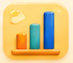
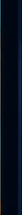
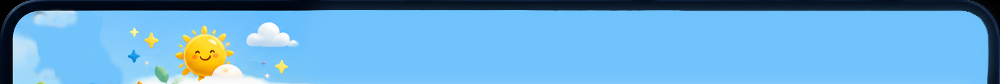
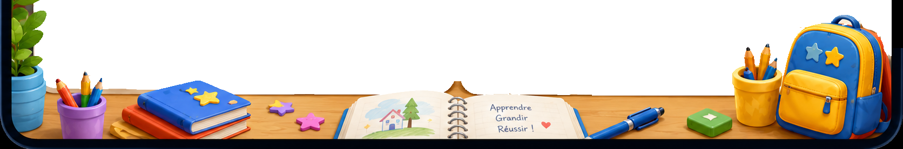

Organisation
Planifiez, organisez et structurez vos apprentissages.

Progressions par période
Consultez et adaptez vos progressions annuelles.



Planifiez, organisez et structurez vos apprentissages.

Suivez les acquis et accompagnez chaque élève.
Lecture, écriture, oral, vocabulaire, grammaire et orthographe
Les coches, notes et niveaux sont enregistrés dans ce navigateur. La liste des élèves est lue automatiquement depuis Google Sheets.
RESSOURCES DU RÉFÉRENTIEL
Programmes, attendus, ressources pédagogiques et plannings utilisés pour construire le suivi CE2.
ÉVALUATIONS PAR COMPÉTENCES
Documents modifiables, compétences reliées et accès direct à la saisie des résultats.
SUIVIS ET COORDINATION
Une vue opérationnelle des aides internes, accompagnements extérieurs et temps d’inclusion.
Compétences fragiles, élèves à suivre et groupes de besoin à préparer.
RASED, APC, UPE2A, SESSAD, ULIS, accompagnements extérieurs et temps d’inclusion.
Les informations ci-dessous sont limitées à ce qui est utile pour préparer l’accueil et les apprentissages.
Lecture : principe combinatoire compris, sons simples connus ; lecture très simple avec accompagnement.
Mathématiques : nombres travaillés jusqu’à 69 ; additions et soustractions simples en ligne avec manipulation.
Centres d’intérêt : jeux de construction et voitures.
Lecture : principe combinatoire compris, sons simples connus ; lecture très simple avec accompagnement.
Mathématiques : nombres travaillés jusqu’à 99 ; additions et soustractions simples en ligne avec manipulation.
Repérage : repérage dans la semaine encore difficile.
Centre d’intérêt : construction et voitures.
Vigilance pratique : forte peur des chiens.
Horaires non encore définis. Les créneaux seront ajoutés ici dès réception de l’emploi du temps ULIS.
FICHE INDIVIDUELLE · SUIVI MODIFIABLE
Une vue unique pour conserver les réussites, besoins, objectifs, aides, observations et bilans.
🔒 Enregistrement local dans ce navigateur. Les informations doivent rester strictement utiles au suivi pédagogique.
Fais glisser les étiquettes avec la poignée ⋮⋮. Les changements concernent seulement la date choisie.
● Sauvegarde localeORGANISATION ANNUELLE 2026-2027
5 périodes coordonnées, volumes annualisés et créneaux CHAM protégés.
Notez rapidement un rappel, une préparation, une observation ou une idée.
Semaine en cours
Préparation 2026–2027
Contrôle en lecture seule avant tout changement de liste d’élèves.
Pour le sport ou le travail en classe.
Le prénom n’entre dans l’historique qu’après validation.
Une devinette sera choisie parmi les apprentissages de la période.
Voir rapidement ce que les élèves ont demandé dans Maître Hibou.
Espace Parents
Chargement des statistiques…
Statistiques anonymes : aucune famille ni aucun élève n’est identifié.
Un mot positif pour valoriser les efforts, les progrès et l’entraide.